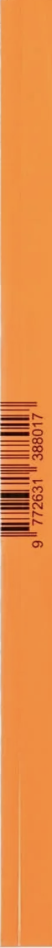
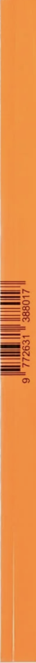

About YeL
YeL은 책을 많이 읽어야겠다는 부담에서 벗어나 완독하여
한 권씩 꽂아나가는 나만의 아날로그 e북 도서관입니다.
읽다 끊긴 책도 이전 요약으로 쉽게 읽을 아카이빙 되는 나만의
도서관을 만들고,친구의 도서관에도 방문할 수 있어요. 친구가 되면
각자의 최애의 책을 트레이딩 할 수도 있답니다.
힘들었던 책 읽기, YeL로 조금 더 재밌게 읽어보아요!
Archiving
Book reading habit
Trading & Exploring
Summarizing
Image literacy


 
